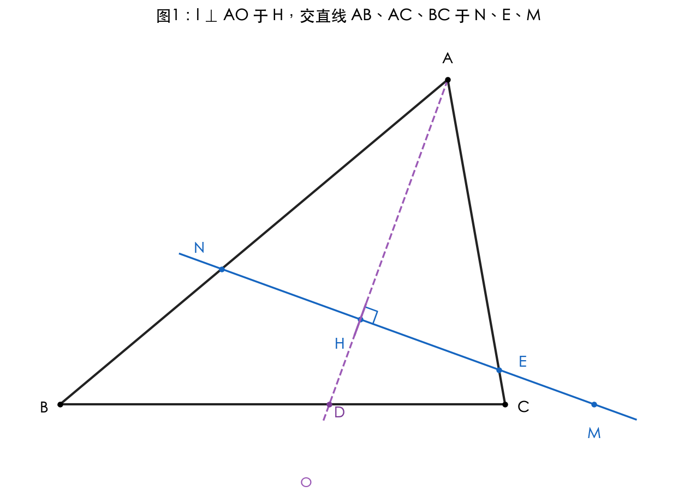
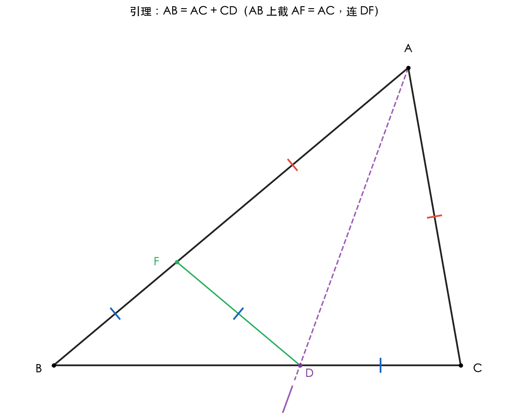
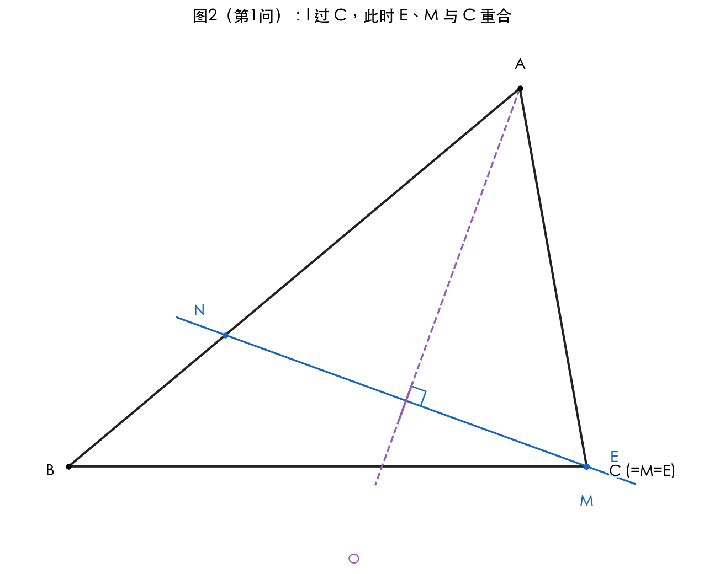
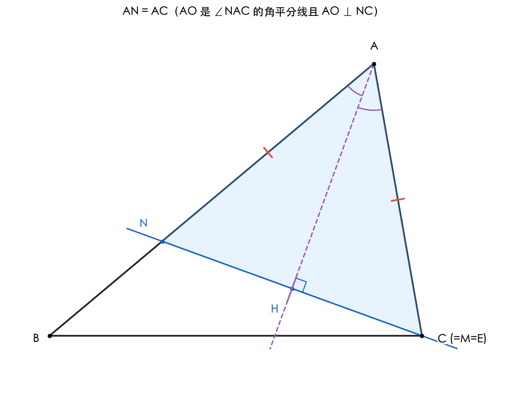
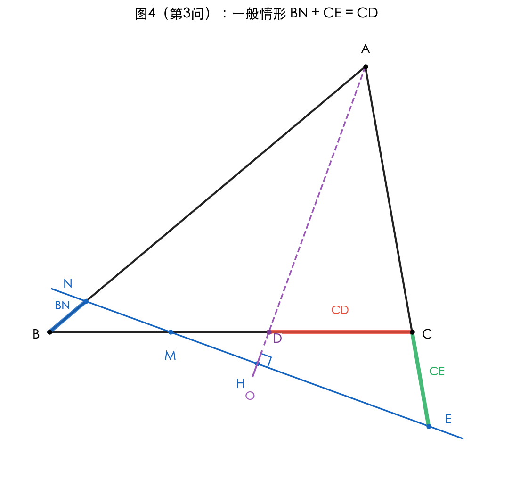
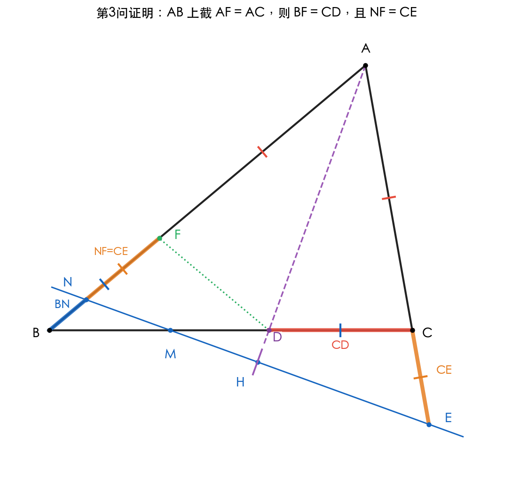
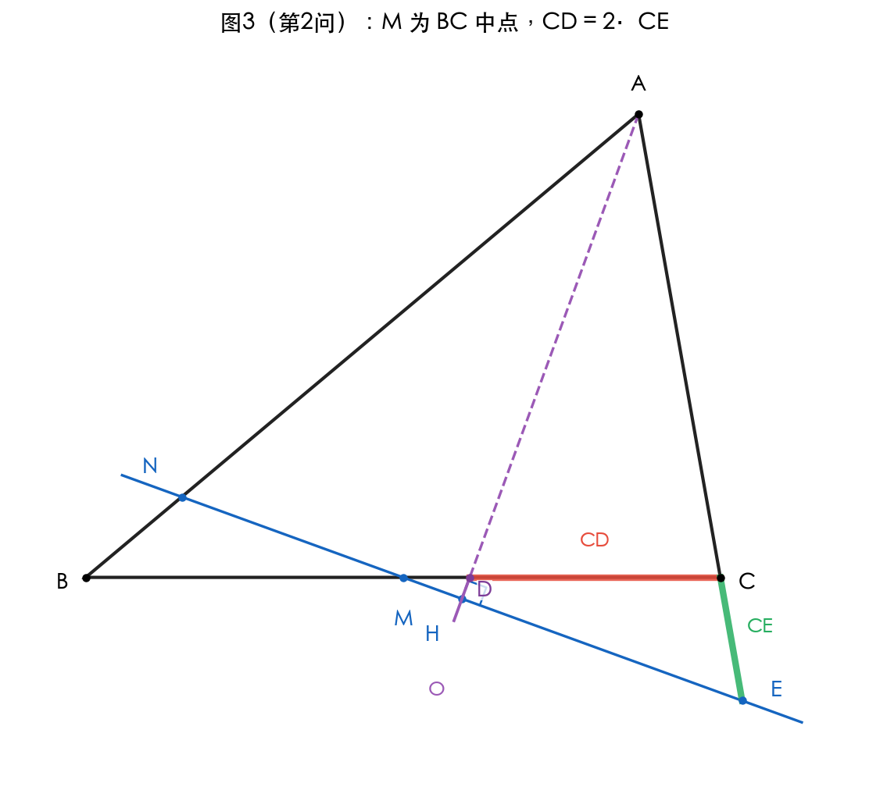
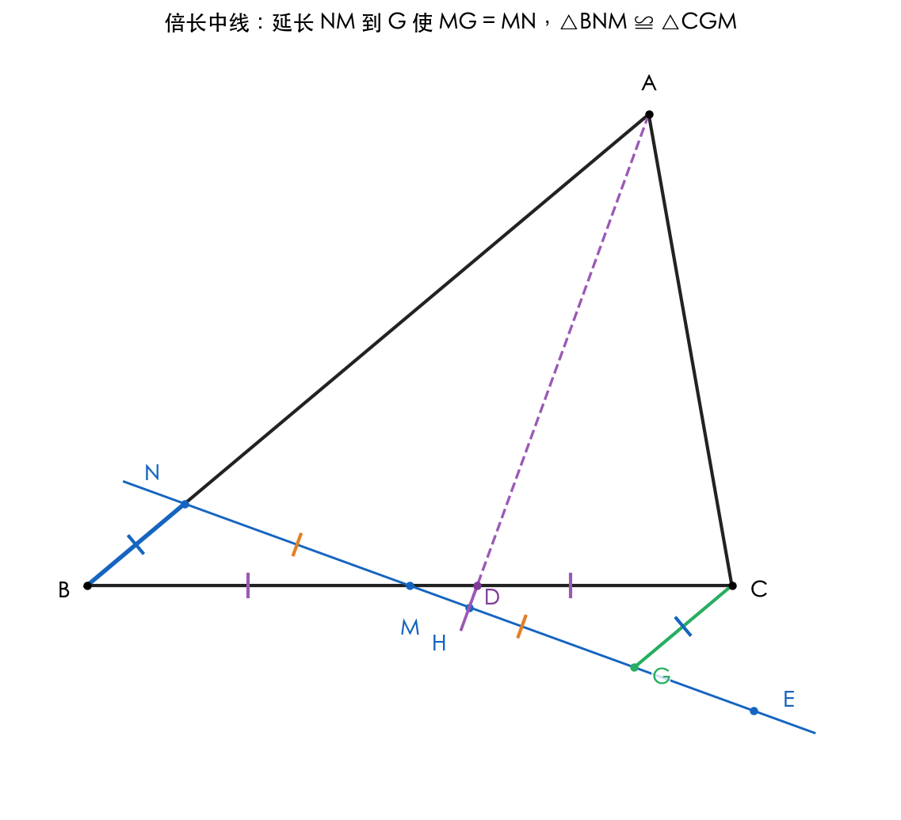

题目
如图1，在 △ABC 中，∠ACB = 2∠B，∠BAC 的平分线 AO 交 BC 于点 D。点 H 为 AO 上一动点，过点 H 作直线 l ⊥ AO 于 H，分别交直线 AB、AC、BC 于 N、E、M。
- (1) 当直线 l 经过点 C 时（如图2），求证：∠B = 2∠NMB；
- (2) 当 M 是 BC 中点时，写出 CE 和 CD 之间的等量关系，并证明；
- (3) 请直接写出 BN、CE、CD 之间的等量关系。

解题思路：两条主线
🔑 主线 A：对称模型
AO 平分 ∠BAC，且 l ⊥ AO ⇒ N、E 关于 AO 对称 ⇒ AN = AE。
🔑 主线 B：经典模型（截长补短）
∠ACB = 2∠B，AD 平分 ∠BAC ⇒ AB = AC + CD。
💭 思考问题
引理：AB = AC + CD

设 ∠B = β，则 ∠ACB = 2β，∠BAC = 180° − 3β。
证明（截长法）：在 AB 上截取 AF = AC，连 DF。
- ① △AFD ≌ △ACD（SAS：AF = AC，∠FAD = ∠CAD，AD 公共）
- ② 由全等得：DF = DC，∠AFD = ∠ACD = 2β
- ③ ∠AFD 是 △BFD 在 F 处的外角 ⇒ 2β = ∠B + ∠BDF = β + ∠BDF
- ④ 解得 ∠BDF = β = ∠B ⇒ △BDF 等腰 ⇒ BF = DF
- ⑤ 综合：BF = DF = DC，从而 AB = AF + FB = AC + DC
∴ AB = AC + CD ∎
💭 思考问题
第(1)问：l 过 C 时，证 ∠B = 2∠NMB

l 过 C ⇒ E = M = C。由对称模型，AN = AE = AC，所以 △ANC 是等腰三角形。

证明：
- ① AN = AC ⇒ △ANC 等腰，∠ANC = ∠ACN
- ② △ANC 中：∠ANC + ∠ACN + ∠NAC = 180°，∠NAC = ∠BAC = 180° − 3β
- ③ ∴ ∠ANC = (180° − (180° − 3β)) / 2 = 3β/2
- ④ N 在线段 AB 内 ⇒ ∠BNC = 180° − ∠ANC = 180° − 3β/2
- ⑤ 在 △BNC 中：∠NCB = 180° − ∠B − ∠BNC = 180° − β − (180° − 3β/2) = β/2
- ⑥ M = C ⇒ ∠NMB = ∠NCB = β/2 = (1/2)∠B
∴ ∠B = 2∠NMB ∎
💭 思考问题
先证恒等式：BN + CE = CD（第3问）
第 (3) 问看似最难，但其实是 (2) 的"母题"。先把它做出来，(2) 立刻可解。

证明（截长补短 + 对称）：
在 AB 上截取 AF = AC，连接 DF。

第一步：BF = CD
- ① △AFD 与 △ACD：AF = AC，∠FAD = ∠CAD（角平分线），AD 公共 ⇒ △AFD ≌ △ACD（SAS）
- ② 由全等：DF = DC，∠AFD = ∠ACD = 2β
- ③ 外角定理：∠AFD = ∠B + ∠FDB ⇒ 2β = β + ∠FDB ⇒ ∠FDB = β = ∠B
- ④ ∴ △BDF 等腰，BF = DF = DC，即 BF = CD
第二步：NF = CE（用对称模型）
- ⑤ 由 AN = AE（对称模型）；F 在 N 与 A 之间（因 AF = AC ＜ AE = AN）
- ⑥ NF = AN − AF = AE − AC = CE，即 NF = CE
第三步：拼接
- ⑦ N、F 都在 AB 上，顺序 B—N—F—A，所以 BN + NF = BF
- ⑧ 代入：BN + CE = BF = CD
∴ BN + CE = CD ∎
注：本证法把三段的关系直接落到一条直线 AB 上的拼接 BN + NF = BF，比用代数式 (AB−AN)+(AE−AC) 两边相加更直观，也不必先单独证明引理 AB = AC + CD（本证法的第一步即为该引理的等价构造）。当 H 在 AO 不同位置使 N、E 落在不同区段时，相应得到 BN − CE = CD 等变体，思路一致。
💭 思考问题
第(2)问：M 中点时，CD = 2·CE

结论
CD = 2·CE
策略：由恒等式 BN + CE = CD（第3问），只要再证 BN = CE，就能得到 2CE = CD。

证明 BN = CE（倍长中线）：
- ① 延长 NM 至 G，使 MG = MN，连 CG
- ② △BNM ≌ △CGM（SAS：BM = CM 中点；∠BMN = ∠CMG 对顶角；NM = GM 构造）
- ③ ⇒ CG = BN，∠GCM = ∠NBM = β
- ④ 在 △ABD 中：∠ADB = 180° − β − (180° − 3β)/2 = 90° + β/2
- ⑤ l ⊥ AO ⇒ l 与 BC 在 M 处的夹角 = β/2，即 ∠NMB = ∠EMC = β/2
- ⑥ △BNM 中：∠BNM = 180° − β − β/2 = 180° − 3β/2 ⇒ ∠CGM = 180° − 3β/2
- ⑦ G、E 在直线 l 上 M 的两侧 ⇒ ∠CGE = 180° − ∠CGM = 3β/2
- ⑧ 在 △CEM 中：∠ECM = 180° − 2β（E 在 AC 延长线外），∠EMC = β/2 ⇒ ∠CEM = 3β/2
- ⑨ ∴ △CGE 中 ∠CGE = ∠CEG = 3β/2 ⇒ 等腰 ⇒ CG = CE
- ⑩ 综合 ③⑨：BN = CG = CE
代入 BN + CE = CD：CE + CE = CD ⇒ CD = 2·CE ∎
💭 思考问题
思路梳理
最终答案
- (1) ∠B = 2∠NMB
- (2) CD = 2·CE（即 CE = CD/2）
- (3) BN + CE = CD
解题流程
知识点
解题技巧
- • 看到角平分线 + 垂线：立即联想 AN = AE 对称。
- • 看到 ∠C = 2∠B + 角平分线：立即联想 AB = AC + CD。
- • 由特殊到一般：第(3)问的恒等式其实是母题，做完它会让(1)(2)瞬间清晰。
- • 看到中点 + 跨三角形的边：尝试倍长中线。
- • 位置讨论：N、E 在线段内还是延长线上会改变加减号方向，做题时画图明确。